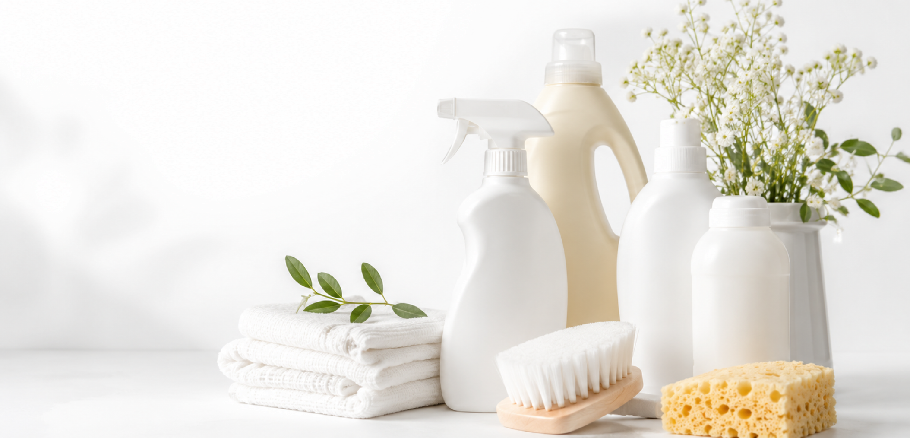

5 шагов к чистой кухне без химии
Кухня — одно из самых сложных мест для уборки. Жир, остатки пищи, известковый налёт и неприятные запахи появляются здесь практически каждый день. Однако для поддержания порядка необязательно использовать большое количество агрессивных средств.

Шаг 1. Начните с удаления лишнего
Перед уборкой освободите рабочие поверхности. Уберите продукты, посуду, кухонные принадлежности и небольшую бытовую технику.
Когда столешница свободна, очистить её гораздо проще. Кроме того, это позволяет заметить загрязнения в углах, возле стены и под предметами, которые обычно остаются незаметными.
Сухие крошки лучше сначала убрать салфеткой или щёткой. Если сразу протирать поверхность влажной губкой, мелкие загрязнения могут размазаться и усложнить уборку.
Шаг 2. Размягчите жир и засохшие загрязнения
Не стоит сразу пытаться оттереть засохший жир жёсткой губкой. Это может повредить поверхность плиты, фасадов или столешницы.
Нанесите на загрязнённый участок тёплую воду или мягкий моющий раствор и оставьте на несколько минут. За это время загрязнение размягчится, после чего его будет легче удалить обычной салфеткой.
Для регулярной уборки лучше выбирать средства без резкого запаха и слишком агрессивных компонентов. Перед использованием состава обязательно проверьте рекомендации производителя поверхности.
Шаг 3. Очистите поверхности сверху вниз
Уборку удобнее начинать с верхних шкафов, полок и вытяжки, постепенно переходя к столешнице, плите и полу.
Так пыль и мелкие загрязнения не будут попадать на уже очищенные участки.
Особое внимание стоит уделить местам, которых часто касаются руками:
- ручкам шкафов;
- выключателям;
- дверце холодильника;
- смесителю;
- кнопкам бытовой техники.
Эти зоны загрязняются быстрее остальных, поэтому их желательно протирать регулярно.
Простые привычки для ежедневной чистоты
Поддерживать порядок легче, чем каждый раз проводить долгую генеральную уборку. Достаточно уделять кухне несколько минут в день:
- протирать столешницу после приготовления пищи;
- сразу удалять пятна с плиты;
- не оставлять мокрые губки в раковине;
- регулярно выносить мусор;
- проверять продукты в холодильнике;
- проветривать помещение.